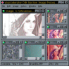
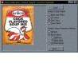
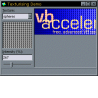
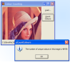
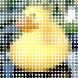
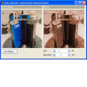
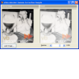
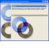
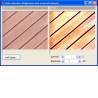

CD Track Listing Using freedb.org
CD Track Listing Using freedb.org
 Reading and Writing MP3 ID3v1 and ID3v2 Tags
Reading and Writing MP3 ID3v1 and ID3v2 Tags
 Transparent GDI Sprite Library
Transparent GDI Sprite Library

Image Processing Index
|  | Image Processing Using DIB SectionsThis sample demonstrates a new 24 bit image processor using the DIB Section GDI object, allowing you to perform a whole raft of standard Image Processing functions, including blurring, sharpening, colourising, resampling and image arithmetic. Last Updated: 13 January 2003 |
|  | Colour Depth ControlIn VB, you cannot change the colour depth of a bitmap. This article presents classes allowing you to reduce or increase the colour depth using a number of different methods and also to save the resulting image to disk as a bitmap with the specified colour depth. Last Updated: 13 January 2003 |
|  | Texturising ImagesThis sample provides a simple image processing application which applies a texture to an image by modifying the lightness of the image according to the lightness of a texture image. The texture image is tiled across the surface of the processed image. Last Updated: 13 January 2003 |
|  | Counting Colours in an ImageCounting the number of distinct colours in an image doesn't sound like a particularly hard thing to do until you try it on a large 24-bit image. This article demonstrates one technique for counting the colours quickly. Last Updated: 13 January 2003 |
|  | Quantising BitmapsThis sample was inspired by a T-Shirt I bought which used circles of various sizes to represent the intensity level of a blown-up image. The image is easy to see at a distance but not so straightforward close-up (which is handy, as I'm no oil-painting close-up). The code demonstrates averaging the pixels in an image and then creating a new image with one which uses an image from a strip which corresponds to the intensity at that point, optionally setting the colour to match the original. Last Updated: 16 April 2004 |
Programmatic Creation of Drop-ShadowsThis sample demonstrates creating an alpha-blended drop-shadow for a bitmap in code. Intensity, colour, offset and blurring of the effect can all be easily controlled. For reasonably sized source bitmaps, the code is efficient enough to run in real-time on most machines. Last Updated: 16 April 2004 | |
|  | ColourisationImage colourisation is a widely-used technique in image processing which can be used to create sepia-toned effects as well as adjusting images so they can be used as watermarks and in the creation of layered background images. This article demonstrates how to use the Hue, Luminance and Saturation model to perform colourisation and to adjust the intensity of the applied effect. Last Updated: 23 October 2003 |
|  | Gamma CorrectionA Gamma Correction filter is primarily used for colour matching purposes on CRT based displays, but it can also be used for creative image processing. This article shows how the gamma filter is calculated and provides an implementation. Last Updated: 5 September 2003 |
|  | Compositing OperationsThere are various ways of combining two images together, particularly when either or both of the two images contain alpha channels. As the real-time video-effects industry has developed, twelve standard compositing techniques, know as the Porter-Duff Compositing Operations, have emerged. In addition, many image processing application support other useful operations, such as "Burn" and "Hard-Light". GDI and GDI+ provide very limited support for compositing operations, so this article demonstrates how to perform them using VB code. Last Updated: 5 September 2003 |
|  | Brightness and ContrastThis article demonstrates how to apply two of the simplest image processsing filters, brightness and contrast, to an image. Last Updated: 5 September 2003 |